Relocalization success
93%
CROSS, stereo + odometry
- CROSS93%
- LingBot-Map upper bound59%
- RTAB-Map same inputs43%
Can a robot find its place again in a map from another session after the light, the season or the furniture changed? CROSS and 6 open-source SLAM systems ran on the same sessions: 120 sessions in 4 datasets, 2,566 relocalization trials, 9,198 runs in all.
Relocalization success
93%
CROSS, stereo + odometry
Localization in a stored map
93%
CROSS, stereo + odometry
Mapping accuracy (ATE)
0.35%of the path
CROSS, stereo + odometry · lower is better
The tiles show CROSS with a stereo camera and odometry (stereo_wheel, the recommended mode for these sensors). RTAB-Map gets the same odometry: wheel odometry on OpenLORIS, close to the ground truth elsewhere (INS velocities on KITTI, ground truth plus noise on ROVER and SimChange). With cameras only, CROSS scores 88%, 86% and 0.57%. The leaderboard ranks each system's best configuration.
The best configuration of each system, ranked by its overall score. Pick a task, then filter by the sensors your robot has.
| Rank | System | Overall successwithin 2 m indoors, 5 m outdoors | OpenLORISwithin 2 m | ROVERwithin 5 m | SimChangewithin 2 m |
|---|---|---|---|---|---|
| 1 | CROSSVGGT-Omega · VGGT-inertial odometryOpenLORIS 87%ROVER 95%SimChange 99% | 94%strict 90% | 87%1 m: 77% | 95%3 m: 95% | 99%1 m: 98% |
| 2 | LingBot-MapOpenLORIS 53%ROVER 39%SimChange 84% | 59%strict 49% | 53%1 m: 46% | 39%3 m: 29% | 84%1 m: 74% |
| 3 | RTAB-Mapdataset odometryOpenLORIS 36%ROVER 14%SimChange 85% (1/76 failed) | 45%strict 43%1/100 failed | 36%1 m: 29% | 14%3 m: 14% | 85%1 m: 85%1/76 failed |
| 3 | ORB-SLAM3visual-inertialOpenLORIS 31%ROVER 23%SimChange 80% | 45%strict 41% | 31%1 m: 23% | 23%3 m: 22% | 80%1 m: 80% |
| 5 | AMB3R-SLAMOpenLORIS 8%ROVER 18%SimChange 39% | 22%strict 20% | 8%1 m: 7% | 18%3 m: 18% | 39%1 m: 34% |
| 6 | VGGT-SLAM 2.0OpenLORIS 11%ROVER 18%SimChange 28% | 19%strict 13% | 11%1 m: 8% | 18%3 m: 14% | 28%1 m: 18% |
| 7 | MASt3R-SLAMOpenLORIS 12%ROVER 0% (7/7 failed)SimChange 38% (5/76 failed) | 17%strict 13%12/100 failed | 12%1 m: 8% | 0%3 m: 0%7/7 failed | 38%1 m: 31%5/76 failed |
| Not ranked: no overall value | |||||
| not ranked | CROSSPnP on depth · dataset odometryOpenLORIS 67%ROVER 76%SimChange 93% | 79%strict 75% | 67%1 m: 59% | 76%3 m: 76% | 93%1 m: 92% |
| not ranked | CROSSPnP on depth · Basalt stereo VIOOpenLORIS 67%ROVER 77%SimChange 93% | 79%strict 76% | 67%1 m: 59% | 77%3 m: 76% | 93%1 m: 92% |
| not ranked | CROSSPnP on depth · visual odometryOpenLORIS 67%ROVER 71%SimChange 92% | 77%strict 73% | 67%1 m: 58% | 71%3 m: 71% | 92%1 m: 91% |
| not ranked | CROSSVGGT-Omega scaled by depth · dataset odometryOpenLORIS 81%ROVER 96%SimChange 99% | 92%strict 89% | 81%1 m: 73% | 96%3 m: 95% | 99%1 m: 99% |
| not ranked | CROSSVGGT-Omega scaled by depth · Basalt stereo VIOOpenLORIS 81%ROVER 96%SimChange 99% | 92%strict 89% | 81%1 m: 73% | 96%3 m: 96% | 99%1 m: 99% |
| not ranked | CROSSVGGT-Omega · dataset odometryOpenLORIS 84%ROVER 97%SimChange 99% | 93%strict 90% | 84%1 m: 76% | 97%3 m: 96% | 99%1 m: 99% |
| not ranked | CROSSVGGT-Omega · Basalt stereo VIOOpenLORIS 84%ROVER 97%SimChange 99% | 93%strict 90% | 84%1 m: 76% | 97%3 m: 96% | 99%1 m: 98% |
| not ranked | CROSSVGGT-Omega · visual odometryOpenLORIS 79%ROVER 88%SimChange 98% | 88%strict 84% | 79%1 m: 68% | 88%3 m: 87% | 98%1 m: 98% |
| not ranked | CROSSDepth Anything 3 · dataset odometryOpenLORIS 68%ROVER 70%SimChange 94% | 77%strict 74% | 68%1 m: 59% | 70%3 m: 69% | 94%1 m: 94% |
| not ranked | CROSSDepth Anything 3 · Basalt stereo VIOOpenLORIS 68%ROVER 70%SimChange 94% | 77%strict 74% | 68%1 m: 59% | 70%3 m: 69% | 94%1 m: 94% |
| not ranked | CROSSDepth Anything 3 · visual odometryOpenLORIS 60%ROVER 46%SimChange 86% | 64%strict 58% | 60%1 m: 51% | 46%3 m: 42% | 86%1 m: 82% |
| not ranked | CROSSVGGT-Omega mono · dataset odometryOpenLORIS 80%ROVER 97%SimChange 99% | 92%strict 89% | 80%1 m: 72% | 97%3 m: 96% | 99%1 m: 98% |
| not ranked | CROSSVGGT-Omega mono · Basalt stereo VIOOpenLORIS 80%ROVER 97%SimChange 99% | 92%strict 89% | 80%1 m: 72% | 97%3 m: 96% | 99%1 m: 99% |
| not ranked | CROSSVGGT-Omega mono · visual odometryOpenLORIS 75%ROVER 38%SimChange 98% | 70%strict 64% | 75%1 m: 63% | 38%3 m: 33% | 98%1 m: 95% |
| not ranked | CROSSVGGT-Omega mono · visual-inertial odometryOpenLORIS 70%ROVER 91%SimChange 99% | 87%strict 81% | 70%1 m: 60% | 91%3 m: 86% | 99%1 m: 97% |
| not ranked | CROSSVGGT-Omega mono · VGGT-inertial odometryOpenLORIS 77%ROVER 79%SimChange 99% | 85%strict 78% | 77%1 m: 67% | 79%3 m: 69% | 99%1 m: 99% |
| not ranked | ORB-SLAM3OpenLORIS 25%ROVER 5%SimChange 67% | 32%strict 30% | 25%1 m: 18% | 5%3 m: 5% | 67%1 m: 66% |
| not ranked | ORB-SLAM3OpenLORIS 27%ROVER 10%SimChange 55% | 31%strict 28% | 27%1 m: 20% | 10%3 m: 10% | 55%1 m: 54% |
| not ranked | ORB-SLAM3OpenLORIS 12%ROVER 6%SimChange 61% | 26%strict 24% | 12%1 m: 8% | 6%3 m: 6% | 61%1 m: 57% |
| not ranked | ORB-SLAM3visual-inertialOpenLORIS 32%ROVER 0% (7/7 failed)SimChange 80% | 37%strict 35%7/100 failed | 32%1 m: 25% | 0%3 m: 0%7/7 failed | 80%1 m: 80% |
| not ranked | ORB-SLAM3visual-inertialOpenLORIS 0%ROVER 0%SimChange 34% | 12%strict 11% | 0%1 m: 0% | 0%3 m: 0% | 34%1 m: 34% |
| not ranked | RTAB-Mapdataset odometryOpenLORIS 35%ROVER 10%SimChange 85% | 43%strict 41% | 35%1 m: 30% | 10%3 m: 10% | 85%1 m: 84% |
| not ranked | RTAB-MapBasalt stereo VIOOpenLORIS 36%ROVER 13%SimChange 85% | 45%strict 42% | 36%1 m: 29% | 13%3 m: 13% | 85%1 m: 84% |
| not ranked | RTAB-MapBasalt stereo VIOOpenLORIS 35%ROVER 10%SimChange 85% | 43%strict 41% | 35%1 m: 30% | 10%3 m: 10% | 85%1 m: 84% |
| not ranked | RTAB-Mapvisual odometryOpenLORIS 37%ROVER 13%SimChange 85% | 45%strict 41% | 37%1 m: 28% | 13%3 m: 13% | 85%1 m: 83% |
| not ranked | RTAB-Mapvisual odometryOpenLORIS 38%ROVER 10%SimChange 84% | 44%strict 40% | 38%1 m: 28% | 10%3 m: 10% | 84%1 m: 82% |
| not ranked | RTAB-Mapvisual-inertial odometryOpenLORIS 38%ROVER 13%SimChange 85% | 45%strict 42% | 38%1 m: 29% | 13%3 m: 13% | 85%1 m: 83% |
| not ranked | RTAB-Mapvisual-inertial odometryOpenLORIS 36%ROVER 10%SimChange 84% | 43%strict 40% | 36%1 m: 28% | 10%3 m: 10% | 84%1 m: 83% |
| not ranked | AMB3R-SLAMOpenLORIS 10%ROVER 18%SimChange 39% | 22%strict 19% | 10%1 m: 7% | 18%3 m: 18% | 39%1 m: 34% |
| not ranked | AMB3R-SLAMOpenLORIS 8%ROVER 11%SimChange 39% | 19%strict 16% | 8%1 m: 4% | 11%3 m: 11% | 39%1 m: 34% |
| Rank | System | Overall recallwithin 2 m indoors, 5 m outdoors | OpenLORISwithin 2 m | ROVERwithin 5 m | SimChangewithin 2 m |
|---|---|---|---|---|---|
| 1 | CROSSVGGT-Omega · VGGT-inertial odometryOpenLORIS 90%ROVER 97%SimChange 98% | 95%strict 91% | 90%1 m: 81% | 97%3 m: 95% | 98%1 m: 97% |
| 2 | LingBot-MapOpenLORIS 35%ROVER 49%SimChange 93% | 59%strict 40% | 35%1 m: 22% | 49%3 m: 21% | 93%1 m: 76% |
| 3 | RTAB-Mapvisual-inertial odometryOpenLORIS 29%ROVER 64%SimChange 79% | 57%strict 51% | 29%1 m: 23% | 64%3 m: 64% | 79%1 m: 65% |
| 4 | ORB-SLAM3visual-inertialOpenLORIS 26%ROVER 52%SimChange 84% | 54%strict 47% | 26%1 m: 23% | 52%3 m: 33% | 84%1 m: 84% |
| 5 | AMB3R-SLAMOpenLORIS 15%ROVER 41%SimChange 71% | 42%strict 31% | 15%1 m: 8% | 41%3 m: 33% | 71%1 m: 52% |
| 6 | VGGT-SLAM 2.0OpenLORIS 13%ROVER 15%SimChange 15% | 15%strict 7% | 13%1 m: 7% | 15%3 m: 9% | 15%1 m: 6% |
| 7 | MASt3R-SLAMOpenLORIS 5%ROVER 0% (7/7 failed)SimChange 15% (18/76 failed) | 7%strict 5%25/100 failed | 5%1 m: 3% | 0%3 m: 0%7/7 failed | 15%1 m: 13%18/76 failed |
| Not ranked: no overall value | |||||
| not ranked | CROSSPnP on depth · dataset odometryOpenLORIS 69%ROVER 98%SimChange 94% | 87%strict 79% | 69%1 m: 45% | 98%3 m: 98% | 94%1 m: 92% |
| not ranked | CROSSPnP on depth · Basalt stereo VIOOpenLORIS 69%ROVER 99%SimChange 94% | 87%strict 79% | 69%1 m: 45% | 99%3 m: 98% | 94%1 m: 94% |
| not ranked | CROSSPnP on depth · visual odometryOpenLORIS 43%ROVER 96%SimChange 92% | 77%strict 72% | 43%1 m: 31% | 96%3 m: 95% | 92%1 m: 91% |
| not ranked | CROSSVGGT-Omega scaled by depth · dataset odometryOpenLORIS 82%ROVER 99%SimChange 99% | 93%strict 90% | 82%1 m: 72% | 99%3 m: 99% | 99%1 m: 99% |
| not ranked | CROSSVGGT-Omega scaled by depth · Basalt stereo VIOOpenLORIS 82%ROVER 99%SimChange 99% | 93%strict 90% | 82%1 m: 72% | 99%3 m: 99% | 99%1 m: 99% |
| not ranked | CROSSVGGT-Omega · dataset odometryOpenLORIS 82%ROVER 100%SimChange 99% | 93%strict 87% | 82%1 m: 65% | 100%3 m: 99% | 99%1 m: 98% |
| not ranked | CROSSVGGT-Omega · Basalt stereo VIOOpenLORIS 82%ROVER 100%SimChange 99% | 93%strict 88% | 82%1 m: 65% | 100%3 m: 99% | 99%1 m: 98% |
| not ranked | CROSSVGGT-Omega · visual odometryOpenLORIS 61%ROVER 100%SimChange 97% | 86%strict 80% | 61%1 m: 45% | 100%3 m: 99% | 97%1 m: 96% |
| not ranked | CROSSDepth Anything 3 · dataset odometryOpenLORIS 72%ROVER 99%SimChange 93% | 88%strict 78% | 72%1 m: 45% | 99%3 m: 97% | 93%1 m: 91% |
| not ranked | CROSSDepth Anything 3 · Basalt stereo VIOOpenLORIS 72%ROVER 99%SimChange 93% | 88%strict 78% | 72%1 m: 45% | 99%3 m: 96% | 93%1 m: 92% |
| not ranked | CROSSDepth Anything 3 · visual odometryOpenLORIS 47%ROVER 15%SimChange 85% | 49%strict 31% | 47%1 m: 38% | 15%3 m: 2% | 85%1 m: 52% |
| not ranked | CROSSVGGT-Omega mono · dataset odometryOpenLORIS 82%ROVER 100%SimChange 99% | 94%strict 90% | 82%1 m: 72% | 100%3 m: 99% | 99%1 m: 98% |
| not ranked | CROSSVGGT-Omega mono · Basalt stereo VIOOpenLORIS 82%ROVER 98%SimChange 98% | 93%strict 90% | 82%1 m: 72% | 98%3 m: 98% | 98%1 m: 98% |
| not ranked | CROSSVGGT-Omega mono · visual odometryOpenLORIS 48%ROVER 9%SimChange 96% | 51%strict 43% | 48%1 m: 40% | 9%3 m: 3% | 96%1 m: 85% |
| not ranked | CROSSVGGT-Omega mono · visual-inertial odometryOpenLORIS 55%ROVER 64%SimChange 97% | 72%strict 56% | 55%1 m: 37% | 64%3 m: 40% | 97%1 m: 92% |
| not ranked | CROSSVGGT-Omega mono · VGGT-inertial odometryOpenLORIS 78%ROVER 89%SimChange 98% | 88%strict 70% | 78%1 m: 58% | 89%3 m: 56% | 98%1 m: 97% |
| not ranked | ORB-SLAM3OpenLORIS 17%ROVER 38%SimChange 81% | 45%strict 43% | 17%1 m: 12% | 38%3 m: 37% | 81%1 m: 80% |
| not ranked | ORB-SLAM3OpenLORIS 32%ROVER 38%SimChange 71% | 47%strict 42% | 32%1 m: 21% | 38%3 m: 38% | 71%1 m: 68% |
| not ranked | ORB-SLAM3OpenLORIS 13%ROVER 16%SimChange 26% | 18%strict 12% | 13%1 m: 7% | 16%3 m: 16% | 26%1 m: 14% |
| not ranked | ORB-SLAM3visual-inertialOpenLORIS 15%ROVER 0% (7/7 failed)SimChange 86% | 34%strict 32%7/100 failed | 15%1 m: 11% | 0%3 m: 0%7/7 failed | 86%1 m: 85% |
| not ranked | ORB-SLAM3visual-inertialOpenLORIS 3%ROVER 0%SimChange 62% | 22%strict 12% | 3%1 m: 2% | 0%3 m: 0% | 62%1 m: 32% |
| not ranked | RTAB-Mapdataset odometryOpenLORIS 26%ROVER 47%SimChange 90% (1/76 failed) | 55%strict 44%1/100 failed | 26%1 m: 21% | 47%3 m: 21% | 90%1 m: 89%1/76 failed |
| not ranked | RTAB-Mapdataset odometryOpenLORIS 24%ROVER 40%SimChange 89% | 51%strict 43% | 24%1 m: 22% | 40%3 m: 26% | 89%1 m: 81% |
| not ranked | RTAB-MapBasalt stereo VIOOpenLORIS 26%ROVER 46%SimChange 86% | 53%strict 42% | 26%1 m: 21% | 46%3 m: 24% | 86%1 m: 80% |
| not ranked | RTAB-MapBasalt stereo VIOOpenLORIS 24%ROVER 36%SimChange 90% | 50%strict 44% | 24%1 m: 22% | 36%3 m: 21% | 90%1 m: 90% |
| not ranked | RTAB-Mapvisual odometryOpenLORIS 16%ROVER 70%SimChange 82% | 56%strict 48% | 16%1 m: 9% | 70%3 m: 63% | 82%1 m: 72% |
| not ranked | RTAB-Mapvisual odometryOpenLORIS 29%ROVER 60%SimChange 77% | 55%strict 49% | 29%1 m: 23% | 60%3 m: 58% | 77%1 m: 65% |
| not ranked | RTAB-Mapvisual-inertial odometryOpenLORIS 16%ROVER 64%SimChange 83% | 54%strict 45% | 16%1 m: 9% | 64%3 m: 56% | 83%1 m: 71% |
| not ranked | AMB3R-SLAMOpenLORIS 19%ROVER 10%SimChange 69% | 33%strict 21% | 19%1 m: 12% | 10%3 m: 3% | 69%1 m: 49% |
| not ranked | AMB3R-SLAMOpenLORIS 9%ROVER 18%SimChange 69% | 32%strict 20% | 9%1 m: 4% | 18%3 m: 7% | 69%1 m: 50% |
| Rank | System | Overall ATE% of path length, lower is better | KITTIATE, m | OpenLORISATE, m | ROVERATE, m | Scale errormono |
|---|---|---|---|---|---|---|
| 1 | CROSSVGGT-Omega scaled by depth · dataset odometryKITTI 1.98 mOpenLORIS 0.67 mROVER 0.10 m | 0.33% | 1.98 m | 0.67 m | 0.10 m | |
| 2 | RTAB-Mapdataset odometryKITTI 2.99 mOpenLORIS 1.61 mROVER 2.11 m | 0.76% | 2.99 m | 1.61 m | 2.11 m | |
| 3 | AMB3R-SLAMKITTI 24.3 mOpenLORIS 1.94 mROVER 2.26 mscale error 36% | 1.32% | 24.3 m | 1.94 m | 2.26 m | 36% |
| 4 | LingBot-MapKITTI 28.5 mOpenLORIS 3.36 mROVER 4.49 mscale error 1,015% | 1.89% | 28.5 m | 3.36 m | 4.49 m | 1,015% |
| Not ranked: the mean leaves failed sequences out, or a dataset was not run | ||||||
| not ranked | ORB-SLAM3KITTI 2.93 mOpenLORIS 0.61 m (5/22 failed)ROVER 0.88 m (3/8 failed) | 0.49%8/40 failed | 2.93 m | 0.61 m5/22 failed | 0.88 m3/8 failed | |
| not ranked | VGGT-SLAM 2.0KITTI 60.3 m (1/10 failed)OpenLORIS 4.35 m (4/22 failed)ROVER 5.07 m (1/8 failed)scale error 4,182% | 3.66%6/40 failed | 60.3 m1/10 failed | 4.35 m4/22 failed | 5.07 m1/8 failed | 4,182% |
| not ranked | MASt3R-SLAMKITTI – (10/10 failed)OpenLORIS 1.12 m (7/22 failed)ROVER – (8/8 failed) | –25/40 failed | –10/10 failed | 1.12 m7/22 failed | –8/8 failed | – |
| not ranked | CROSSPnP on depth · dataset odometryKITTI 1.85 mOpenLORIS 0.76 mROVER 0.14 m | 0.36% | 1.85 m | 0.76 m | 0.14 m | |
| not ranked | CROSSPnP on depth · Basalt stereo VIOKITTI 2.78 mOpenLORIS 0.76 mROVER 0.64 m | 0.44% | 2.78 m | 0.76 m | 0.64 m | |
| not ranked | CROSSPnP on depth · visual odometryKITTI 5.33 mOpenLORIS 5.27 mROVER 1.27 m | 2.20% | 5.33 m | 5.27 m | 1.27 m | |
| not ranked | CROSSVGGT-Omega scaled by depth · Basalt stereo VIOKITTI 2.95 mOpenLORIS 0.67 mROVER 0.64 m | 0.42% | 2.95 m | 0.67 m | 0.64 m | |
| not ranked | CROSSVGGT-Omega · dataset odometryKITTI 1.88 mOpenLORIS 0.82 mROVER 0.09 m | 0.35% | 1.88 m | 0.82 m | 0.09 m | |
| not ranked | CROSSVGGT-Omega · Basalt stereo VIOKITTI 2.99 mOpenLORIS 0.82 mROVER 0.56 m | 0.44% | 2.99 m | 0.82 m | 0.56 m | |
| not ranked | CROSSVGGT-Omega · visual odometryKITTI 5.46 mOpenLORIS 1.10 mROVER 0.65 m | 0.57% | 5.46 m | 1.10 m | 0.65 m | |
| not ranked | CROSSVGGT-Omega · VGGT-inertial odometryKITTI 13.1 mOpenLORIS 0.67 mROVER 2.09 m | 0.69% | 13.1 m | 0.67 m | 2.09 m | |
| not ranked | CROSSDepth Anything 3 · dataset odometryKITTI 1.45 mOpenLORIS 0.78 mROVER 0.16 mscale error 0.8% | 0.37% | 1.45 m | 0.78 m | 0.16 m | 0.8% |
| not ranked | CROSSDepth Anything 3 · Basalt stereo VIOKITTI 2.78 mOpenLORIS 0.78 mROVER 0.62 mscale error 2.2% | 0.45% | 2.78 m | 0.78 m | 0.62 m | 2.2% |
| not ranked | CROSSDepth Anything 3 · visual odometryKITTI 17.7 mOpenLORIS 4.39 mROVER 17.3 m (1/8 failed)scale error 42% | 4.07%1/40 failed | 17.7 m | 4.39 m | 17.3 m1/8 failed | 42% |
| not ranked | CROSSVGGT-Omega mono · dataset odometryKITTI 1.95 mOpenLORIS 0.66 mROVER 0.10 mscale error 0.8% | 0.33% | 1.95 m | 0.66 m | 0.10 m | 0.8% |
| not ranked | CROSSVGGT-Omega mono · Basalt stereo VIOKITTI 2.95 mOpenLORIS 0.66 mROVER 0.63 mscale error 2.1% | 0.42% | 2.95 m | 0.66 m | 0.63 m | 2.1% |
| not ranked | CROSSVGGT-Omega mono · visual odometryKITTI 15.0 mOpenLORIS 3.05 mROVER 38.8 mscale error 54% | 5.83% | 15.0 m | 3.05 m | 38.8 m | 54% |
| not ranked | CROSSVGGT-Omega mono · visual-inertial odometryKITTI 18.8 mOpenLORIS 3.25 mROVER 18.5 mscale error 18% | 3.66% | 18.8 m | 3.25 m | 18.5 m | 18% |
| not ranked | CROSSVGGT-Omega mono · VGGT-inertial odometryKITTI 30.6 mOpenLORIS 0.64 mROVER 6.64 mscale error 8.3% | 1.67% | 30.6 m | 0.64 m | 6.64 m | 8.3% |
| not ranked | ORB-SLAM3KITTI –OpenLORIS 0.72 m (7/22 failed)ROVER 0.95 m (3/8 failed) | –no KITTI run | – | 0.72 m7/22 failed | 0.95 m3/8 failed | |
| not ranked | ORB-SLAM3KITTI 16.0 m (1/10 failed)OpenLORIS 3.19 m (13/22 failed)ROVER – (8/8 failed) | –22/40 failed | 16.0 m1/10 failed | 3.19 m13/22 failed | –8/8 failed | – |
| not ranked | ORB-SLAM3visual-inertialKITTI –OpenLORIS 3.39 m (6/22 failed)ROVER 33.5 m (3/8 failed) | –no KITTI run | – | 3.39 m6/22 failed | 33.5 m3/8 failed | |
| not ranked | ORB-SLAM3visual-inertialKITTI 3.92 m (3/10 failed)OpenLORIS 0.54 m (4/22 failed)ROVER 76.4 m (2/8 failed) | 8.39%9/40 failed | 3.92 m3/10 failed | 0.54 m4/22 failed | 76.4 m2/8 failed | |
| not ranked | ORB-SLAM3visual-inertialKITTI – (10/10 failed)OpenLORIS 1.94 m (14/22 failed)ROVER 11.3 m (7/8 failed) | –31/40 failed | –10/10 failed | 1.94 m14/22 failed | 11.3 m7/8 failed | – |
| not ranked | RTAB-Mapdataset odometryKITTI –OpenLORIS 1.41 mROVER 1.96 m | –no KITTI run | – | 1.41 m | 1.96 m | |
| not ranked | RTAB-MapBasalt stereo VIOKITTI –OpenLORIS 1.41 mROVER 2.34 m | –no KITTI run | – | 1.41 m | 2.34 m | |
| not ranked | RTAB-MapBasalt stereo VIOKITTI 3.57 mOpenLORIS 1.61 mROVER 2.19 m | 0.80% | 3.57 m | 1.61 m | 2.19 m | |
| not ranked | RTAB-Mapvisual odometryKITTI –OpenLORIS 5.16 m (1/22 failed)ROVER 4.09 m (1/8 failed) | –no KITTI run | – | 5.16 m1/22 failed | 4.09 m1/8 failed | |
| not ranked | RTAB-Mapvisual odometryKITTI 6.29 mOpenLORIS 4.51 m (1/22 failed)ROVER 1.23 m (1/8 failed) | 1.49%2/40 failed | 6.29 m | 4.51 m1/22 failed | 1.23 m1/8 failed | |
| not ranked | RTAB-Mapvisual-inertial odometryKITTI –OpenLORIS 5.07 m (1/22 failed)ROVER 3.39 m (1/8 failed) | –no KITTI run | – | 5.07 m1/22 failed | 3.39 m1/8 failed | |
| not ranked | RTAB-Mapvisual-inertial odometryKITTI 6.64 mOpenLORIS 4.49 m (1/22 failed)ROVER 0.82 m (1/8 failed) | 1.44%2/40 failed | 6.64 m | 4.49 m1/22 failed | 0.82 m1/8 failed | |
| not ranked | AMB3R-SLAMKITTI 59.5 mOpenLORIS 2.68 mROVER 12.2 m | 3.06% | 59.5 m | 2.68 m | 12.2 m | |
| not ranked | AMB3R-SLAMKITTI –OpenLORIS 2.61 mROVER 4.33 m | –no KITTI run | – | 2.61 m | 4.33 m | |
Numbers from the published benchmark (2026-10-23, commit b2507d0). Per-scene tables, trajectories and failure cases: full results.
Three tasks under one protocol, with the same radii for every system.
Relocalization
Each query session is cut into 10 s trials: 100 frames at 10 Hz, a new trial every 50 frames. A trial loads the stored map and starts without knowing its pose. It succeeds when its final pose lies within the radius of the ground truth.
Localization in a stored map
A query session (another recording of the same place) runs once against the stored map, from its first frame and with no initial pose. Recall is the share of its frames that have a pose in the map within the radius; a frame without one counts as a miss.
Mapping accuracy
One session is mapped from scratch. The error is the RMSE of the final trajectory after loop closure (ATE), aligned to the ground truth and divided by the length of the path. For CROSS the trajectory is its map keyframes, which are sparser than the other systems' keyframes.
Each dataset weighs the same in an overall score: the mean of OpenLORIS, ROVER and SimChange for localization and relocalization, and of KITTI, OpenLORIS and ROVER for mapping, where the error per path length lets kilometre drives and room-scale sessions compare. Localization and relocalization score only the frames that the map covers and in which the robot moves. Bold: the CROSS paper's radius, in large type in the tables.
Real robots and rendered scenes, revisited under change: 120 sessions and 2,566 relocalization trials.
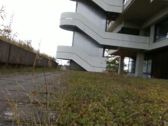
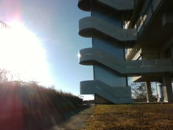
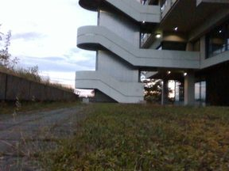
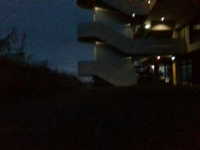
A ground robot drives the same campus route again and again over fourteen months, from summer to winter and from day to night.
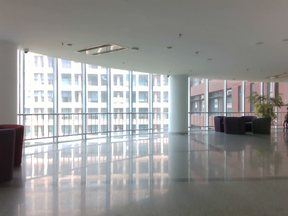
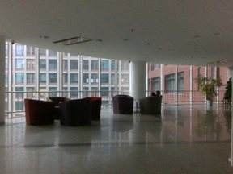
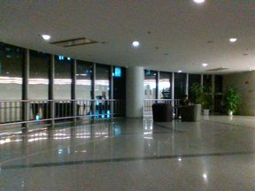
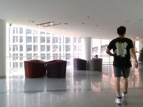
A wheeled robot in an office, a corridor, a home, a café and a supermarket, each visited several times as people come and go.
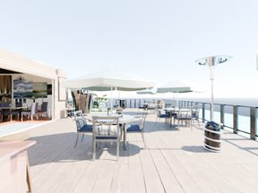
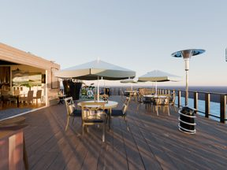
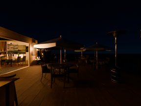
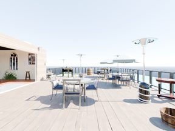
Rendered scenes (a house, a restaurant, a classroom and a cloister), driven again with one factor changed at a time, or several at once.
Not public yet
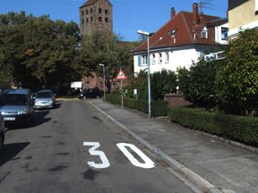
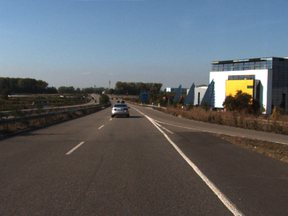
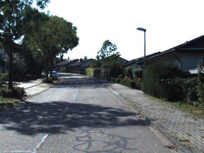
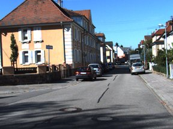
A car on town streets, country roads and a highway around Karlsruhe, on drives of 0.4 to 5 km.
CROSS and 6 open-source systems: two classical feature-based systems and four learned feed-forward ones.
This project
Long-term relocalization with a probabilistic topological map: a keyframe graph with verified loop closures, and the camera pose tracked as a mixture of hypotheses until the evidence separates them. Relative poses come from VGGT-Omega (with any camera), PnP on depth (RGB-D) or the Depth Anything 3 back end (mono).
Classical · feature-based
Visual and visual-inertial SLAM on ORB features, with a multi-map atlas.
Classical · feature-based
Graph SLAM with appearance-based loop-closure detection.
Learned · feed-forward
Dense SLAM on the MASt3R two-view reconstruction model.
Learned · feed-forward
SLAM built from submaps of the VGGT feed-forward model.
Learned · feed-forward
Streaming feed-forward reconstruction over a cache of the map session's keyframes, with no relocalization step.
Learned · feed-forward
Depth Anything 3 submaps joined in a hierarchical Sim(3) pose graph; metric with stereo or depth input.
Install it with one script, map once, and relocalize in every later session. Or reproduce these numbers and add your own system.
One script on Linux with an NVIDIA GPU. RGB-D, stereo or monocular cameras, with or without odometry or an IMU.
Install guideDownload and prepare KITTI, OpenLORIS-Scene and ROVER, then run CROSS or any baseline with the benchmark scripts. SimChange is not public yet.
Benchmark guideWrite a runner that produces the same result file and add one entry to the systems list.
Benchmark README